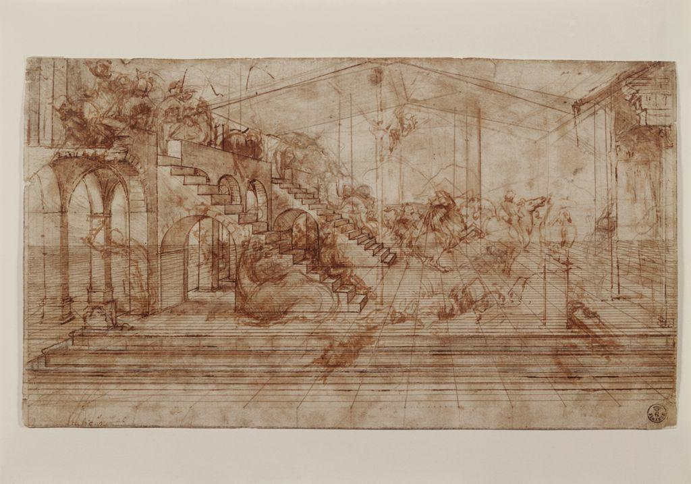

Before we name anything, just look. Spend a full minute with the painting below. Imagine you could walk into it. Where would the ground carry your feet?


This panel shows a perfectly ordered town square that no one ever actually built. No one is even fully certain who painted it. It was once thought to be the work of Piero della Francesca; today the museum that holds it lists the artist as unknown, though the architect Luciano Laurana and the painters Francesco di Giorgio Martini and Melozzo da Forlì have all been proposed. Whoever painted it was working out a Renaissance daydream about a city built on reason and measurement. Look at the paving stones. They are real squares of equal size, yet on the panel they appear to shrink and crowd together as they move away from you. Follow the edges of the buildings and the lines of the pavement. They all seem to aim at one quiet spot near the round building in the center. That single spot is the engine that makes this flat panel feel like a deep, walkable space.
Every one of those answers can be defended from the panel itself. That is the point: an artist builds the feeling of space out of choices you can point to. Now learn to name the system behind it.
In the early 1400s, artists in Florence worked out a geometric method for drawing space the way the eye actually sees it. It is called linear perspective. It rests on a few simple parts, and once you see them you cannot un-see them.
The horizon line and the vanishing point
The horizon line is an imaginary horizontal line set at the viewer's eye level. The vanishing point is a single spot on that line where parallel lines, as they travel away from you, appear to meet. The slanting lines that run back to a vanishing point are called orthogonal lines. You can watch all three at work in a real Renaissance drawing, where Leonardo laid down the guide lines himself.

One point versus two points
When you face a scene head on, like looking straight down a hallway, you need only one vanishing point. That is one-point perspective, and it is what builds The Ideal City and the Leonardo study above. When you instead view an object from the corner, so two sets of edges run away from you, you place two vanishing points, one near each side of the horizon line. That is two-point perspective, and it is what you will use to draw your cityscape. Picture a building seen from its corner: the near vertical edge stays perfectly upright, one wall runs back toward a vanishing point on the left, and the other wall runs back toward a second vanishing point on the right. Your sketch this week walks you through building exactly that.
Why this mattered, and where balance comes in
Renaissance artists prized perspective because it made space feel measured and true, matching their belief that the world could be understood through reason and geometry. But a convincing space is not yet a strong picture. The artist also arranges the parts so the composition feels settled, a quality called balance. In The Ideal City the matching buildings on the left and right create near-perfect symmetry, the calmest kind of balance, which suits a vision of a rational, orderly town.
Artists and critics look at art in a deliberate order, so that judgment is earned and not just blurted. The four steps spell DAIJ: Describe, Analyze, Interpret, Judge. Watch it applied to The Ideal City. You will use the same steps in your VR critique this week, on a work of your own choosing.
Describe (just the facts)
A wide town square paved in patterned stone. Symmetrical buildings line both sides. A round domed building stands in the center, with smaller structures and a clear sky behind. There are no people.
Analyze (how is it built?)
The artist sets a horizon line at our eye level and runs the orthogonal lines of the pavement and rooftops back to a single vanishing point behind the central building. The equal-size paving squares grow smaller as they recede, which measures the depth of the space precisely. The matching left and right halves create symmetrical balance.
Interpret (what is it saying?)
The painting imagines a city governed by order and reason. The flawless geometry and the calm, empty square suggest a world that has been planned rather than left to chance, an ideal more than a real place.
Judge (does it succeed?)
It succeeds. Using nothing but a horizon line, a vanishing point, and careful orthogonals, the artist turns a flat panel into a space deep enough to walk into, and orderly enough to argue a whole philosophy. That is the power you are about to practice.
▶ Try it in your notebook: name one thing in The Ideal City that tells you the space gets deeper, besides the orthogonal lines. Then reveal a check.
A horizon line, a vanishing point or two, and consistent orthogonals. With those few tools the Renaissance turned flat panels into deep, measured space. This week you take the same tools and build a city that recedes for miles, all on one flat sheet.